1、线束包扎设计
线束外包扎起到耐磨、阻燃、防腐蚀、防止干扰、降低噪声、美化外观的作用，一般根据工作环境和空间大小制定以下包扎设计方案。
发动机线束工作环境恶劣，因此全用高阻燃性、防水、机械强度高的螺纹管包扎。
前舱线工作环境也相对较差，大部分枝干也用阻燃性好的螺纹管包扎，部分分支用PVC管包扎。
仪表线工作空间较小，环境相对较好，可用胶带全缠或花缠。
门线和顶篷线工作空间较小，可用胶带全缠，部分枝干可用工业塑料布包扎；较细的顶篷线可直接用海绵胶带粘在车上。
底盘线因与车体接触部分较多，因此用波纹管包扎防止线束磨损。
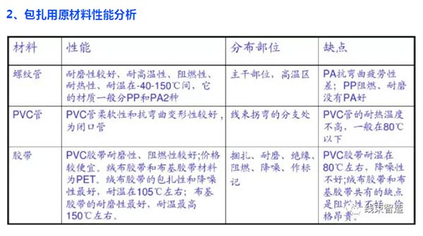
3、外装缠胶布
（1）缠部分胶布
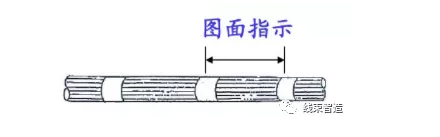
（2）间隔连续缠胶布
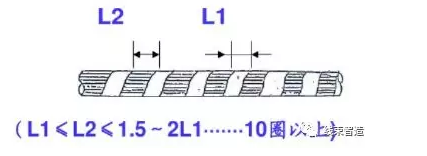
（3）密缠胶布1/4

（4）密缠胶布1/2
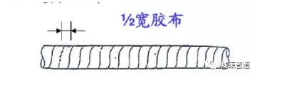
4、密缠胶布
（1）胶布规格：使用0.13*19*20的规格胶布
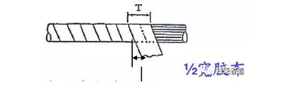
（2）基准（图面指示）
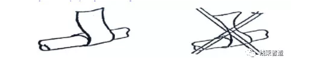
（3）方法：不要拉长胶布缠在电线上

（4）外观
A、即使弯曲成直角（缠胶布处），也看不到里面的电线
B、胶布缠绕部不要拧曲，端末剥离
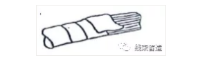
5、分支缠胶布
（1）胶布规格：使用0.13*19*20的规格胶布
（2）基准：十字粘分叉部（里外）两侧，使电线固定，缠两圈以上
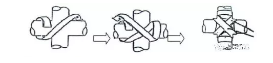
（3）缠绕方法：不要拉长胶布，认真缠到电线上。
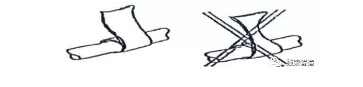
（4）外观
分支部胶布缠绕部不要拧曲，端末剥离等，缠胶布后要看不到电线。
6、疏缠胶布
（1）胶布规格
10mm（w）→≤φ7（线束外径）
19mm（w）→≤φ7以上-φ25（线束外径）
（2）基准：胶布间尺寸与胶布宽度相当，能看到电线。
缠胶布间在50mm以下短的部位或电线根数5根以下时，疏缠胶布时，如果胶布与胶布间的重叠量小于1/2以下，则视为疏缠。
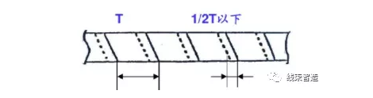
（3）缠绕方法：不要拉长胶布，认真缠到电线上。
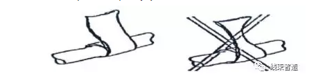
（4）外观
A、疏缠胶布后，不要有胶布拧曲，末端剥离。
B、不要有电线突起，影响产品的外观。（电线突出3mm以内的为合格）
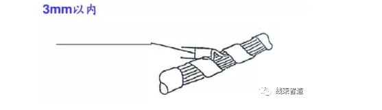
7、多线压接部缠胶布
（1）胶布规格：使用0.13*19*20的规格胶布。
（2）缠绕方法：
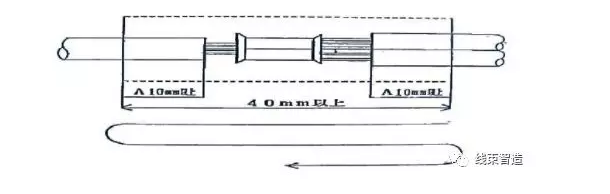
注意：
（1）缠法为半缠绕（重叠一圈半以上）A尺寸10mm以上，缠绕2-3圈；
（2）为了防止胶布翻起等，要在胶布缠绕结束部分认真压好。
声明：禁止复制或转载本站任何内容！